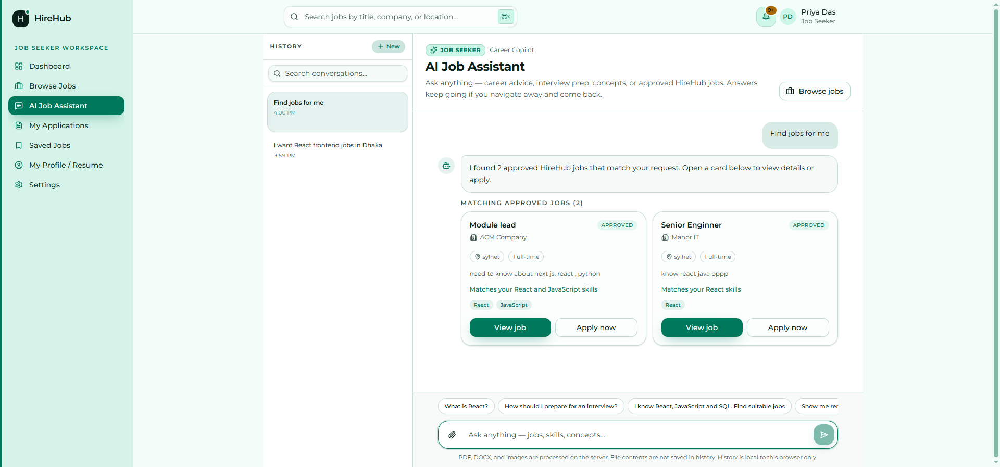
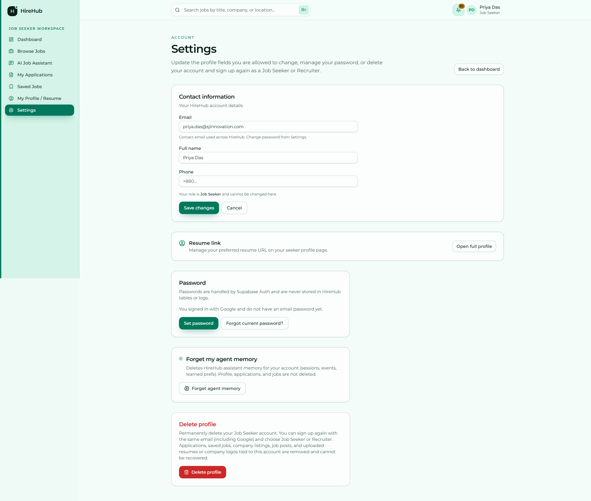

Depth on one advanced layer — durable multi-layer agent memory with semantic recall, compaction, governance, and measured before/after proof on the live product.
HireHub continues from Assessment 3 as a multi-role AI job portal. Assessment 4 ships a finished Memory Layer: Path B working memory, episodic events, semantic facts (gte-small / pgvector), rolling compaction, and a working forget-me path. Memory writes only through the Supervisor. Free tools only.
Public repo, live Vercel app, assessment-4 tag, Decision Log, README metrics, and live Session1→Session2 seeker proof are included for DCT.
| Link | URL |
|---|---|
| Live app | https://hirehub-dev.vercel.app/ |
| Public repo | https://github.com/sjinnovation/hirehub |
| Release tag | assessment-4 · commit f897114 |
| Demo video | Google Drive — internship demos (A4 Memory walkthrough) |
| Decision Log | docs/ASSESSMENT_4_DECISION_LOG.md |
| Before/after metrics | README · Assessment 4 section |
| Supabase | munqgybiuqpncxbgfvdp |
| # | DCT / brief item | Status | Where |
|---|---|---|---|
| 1 | Live URL + public repo | Delivered | Table above |
| 2 | Memory layer end-to-end on live app | Delivered | §2 seeker path |
| 3 | Recall, compaction, governance depth | Delivered | §1 · §4 |
| 4 | Before/after numbers in README | Delivered | §3 |
| 5 | PII · RLS · forget-me | Delivered | §4 |
| 6 | Decision Log | Delivered | Linked above |
| 7 | Write-up + 3–5 min demo | Delivered | This report · Drive video |
| 8 | assessment-4 tag | Delivered | Table above |
agent_sessions (JWT + RLS)agent_memory_eventsagent_semantic_memories + match_agent_semantic_memories (gte-small 384-d), top-k=5 into SupervisorChosen path: Memory (not Orchestration). Decision Log documents trade-off: recall quality vs context budget (top-k=5 + rolling summary).
App: hirehub-dev.vercel.app · Demo role: Job Seeker
| Step | Action | Result |
|---|---|---|
| Auth gate | /settings logged out | Redirects to /auth |
| Session 1 | “I want React frontend jobs in Dhaka” | Preferences learned; durable memory written |
| Session 2 | New chat — “Find jobs for me” | Recalled skills; 2 React-matched jobs |
| Forget me | Settings → Forget my agent memory | Cleared 6 sessions / 28 events / 8 semantic facts |
| Cold start | New chat after forget | Colder / less personalized results |
| Recruiter Settings | Forget-me control | Present for recruiter role |
Evidence: docs/evidence/a4-memory-smoke/ · narrative docs/ASSESSMENT_4_LIVE_UI_FULFILLMENT.md.


| Metric | Before (cold / raw) | After (warm / compact) |
|---|---|---|
| Clarifying signals | 2 | 1 |
| Personalization lift | — | 50% fewer clarify signals |
| Context tokens | 412 | 251 (39.1%↓) |
| Fact fidelity | — | pass (4/4) |
| Ideal-term overlap | 0.00 | 0.24 |
npm run a4:memory-eval npm run a4:recall-trace npm test -- src/test/a4-memory-layer.test.ts
| Control | Evidence |
|---|---|
| Supervisor-only writes | supervisor-memory-layer + seeker/recruiter entrypoints |
| PII on write | Redaction in semantic/episodic upsert + session payload |
| Own-row RLS | Live policies on three memory tables |
| Forget me | Settings UI → forgetMyAgentMemory (live delete counts in §2) |
| Account delete | Clears sessions / events / semantic memories |
| Item | Detail |
|---|---|
| Live app | https://hirehub-dev.vercel.app/ |
| Demo video | Drive folder — A4 Memory Layer walkthrough (3–5 min) |
| Tag | assessment-4 |
| Role credentials | Shared via Dev Control Tower / DM only |
Emails and passwords are not published in this report.
npm test -- src/test/a4-memory-layer.test.ts npm run a4:memory-eval npm run a4:recall-trace
Live: open hirehub-dev.vercel.app as Job Seeker and walk Session1 → Session2 → Forget me → cold start.